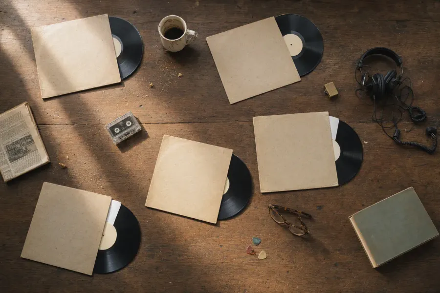
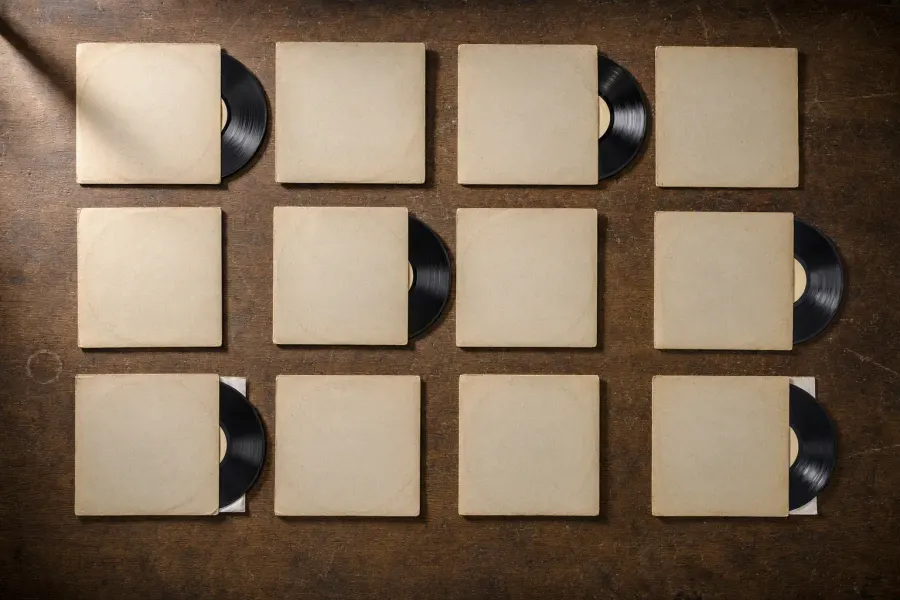

Free · MIT · for any AI agentGrátis · MIT · pra qualquer agente
Your discography,
on a real table.
Sua discografia
numa mesa de verdade.
One photograph of blank record sleeves becomes the board. The real covers go on top, then the photo's own texture goes back over them, so every sleeve reads as printed, not pasted. Uma foto de capas de disco em branco vira o tabuleiro. As capas de verdade entram por cima, e a textura da própria foto volta sobre elas, então cada capa parece impressa, não colada.
Use sapiensinteticos.com/record-table to put my records on a table.
Usa sapiensinteticos.com/record-table pra botar meus discos numa mesa.
Free. MIT. One photograph serves every artist, so adding a record costs nothing. Grátis. MIT. Uma foto serve todo artista, então disco novo não custa nada.
The trickO truque
The photograph is the interface. A fotografia é a interface.
Most "3D shelf" pages draw the furniture in CSS or WebGL, and it always looks drawn. This one starts from a photo and never moves it. Quase toda estante "3D" desenha o móvel em CSS ou WebGL, e sempre parece desenho. Esta parte de uma foto e nunca mexe nela.
Blank on purposeEm branco de propósito
Generate one photo of sleeves with nothing printed on them. It is not an illustration, it is a board with known coordinates.
Gera uma foto de capas sem nada impresso. Não é ilustração, é um tabuleiro com coordenada conhecida.
Real art on topA arte real por cima
Each blank sleeve gets the real cover, trimmed so no bare cardboard shows around it. A band of board around the art reads as two objects.
Cada capa em branco recebe a capa de verdade, cortada pra não sobrar papelão em volta. Faixa de papelão em volta da arte parece dois objetos.
The photo goes back over it, twiceA foto volta por cima, duas vezes
Multiply brings the crease and the shadow down onto the ink. Screen brings the pale paper fibre back up. One pass reads as a sticker; two read as print.
O multiply traz a dobra e a sombra pra cima da tinta. O screen devolve a fibra clara do papel. Uma passada parece adesivo, duas parecem impressão.
/* 1. the dark half comes down onto the art: crease, ring wear, shadow */ .grain { background-image: var(--board); mix-blend-mode: multiply; filter: brightness(1.30) contrast(.88); opacity: .70; } /* 2. the light half goes back up over the ink: ink never hides the paper fibre */ .fibre { background-image: var(--board); mix-blend-mode: screen; filter: brightness(.20) contrast(2) saturate(.4); opacity: .45; }
And every sleeve has its record halfway out: a bare square on wood reads as a poster, one with a black disc behind it reads as an album. E cada capa tem o disco meio pra fora: quadrado solto na madeira parece pôster, com um disco preto atrás parece álbum.
BoardsTabuleiros
Two boards ship with it. Vêm dois tabuleiros.


?board=grid
Um 4×3 certinho pra discografia inteira, selo ou lista do ano, onde a regularidade é o recado. ?board=grid
Make yoursMonte a sua
One file you can send anywhere. Um arquivo que vai pra qualquer lugar.
The finished table is a single HTML file of about 300 KB, with its data and its photograph inside. It opens on a double click, travels by email, and uploads anywhere that takes a static file. A mesa pronta é um HTML só, de uns 300 KB, com os dados e a foto dentro. Abre com dois cliques, vai por email e sobe em qualquer lugar que aceite arquivo estático.
Any agentQualquer agente
Claude, ChatGPT, Gemini, Cursor, Codex. Paste the line and your Spotify link.
Claude, ChatGPT, Gemini, Cursor, Codex. Cola a linha e o seu link do Spotify.
Use sapiensinteticos.com/record-table to put my records on a table.
Usa sapiensinteticos.com/record-table pra botar meus discos numa mesa.
TerminalTerminal
Node 18 or newer and a free Spotify developer app, two minutes to set up.
Node 18 ou mais novo e um app de desenvolvedor do Spotify, grátis, dois minutos pra criar.
git clone https://github.com/inhabitants/record-table
cd record-table
# SPOTIFY_ID and SPOTIFY_SECRET_KEY in a .env
node build.mjs artist "Your Band"
node bundle.mjsPut it onlinePõe no ar
Any static host takes dist/index.html. The first one needs no account up front.
Qualquer host estático aceita o dist/index.html. O primeiro nem pede conta antes.
npx surge dist/
npx vercel deploy --prod dist/
# or drag dist/ onto app.netlify.com/dropNothing here is about music. Books on a desk, tools on a workbench, dishes on a counter: shoot the blank surface once, lay the real thing on top, blend the surface back over it. Nada aqui é sobre música. Livro na escrivaninha, ferramenta na bancada, prato no balcão: fotografa a superfície em branco uma vez, bota a coisa real por cima e devolve a superfície sobre ela.
SKILL.md carries the prompt that generated these boards, the engines that hold "blank" best, and how to measure a new board with?calibrate=1.
O SKILL.md traz o prompt que gerou estes tabuleiros, os motores que seguram melhor o "em branco" e como medir um tabuleiro novo com ?calibrate=1.
FAQ
Before you drop the needle. Antes de baixar a agulha.
Do I need a Spotify account?
Only a free developer app, to build the data. Your visitors never log in: the player plays a preview for anyone and the full track for whoever is already signed in to Spotify.
Is the cover art copied?
No. The covers stay on Spotify's servers as remote images. The page only lays them on the board.
Can I use my own photograph?
Yes. Generate or shoot a new board, measure the sleeves once, and load the page with ?calibrate=1 to check the slots. SKILL.md walks through it.
Why does nothing move?
Because the scene is a photograph. The only motion at rest is the seven pixels a sleeve rises when you reach it. Anything louder breaks the spell.
Who maintains it?
Nobody, on purpose. Published as an artefact, MIT: fork it and put your own photograph under it.
Preciso de conta no Spotify?
Só de um app de desenvolvedor, grátis, pra montar os dados. Quem visita nunca faz login: o player toca uma prévia pra qualquer um e a faixa inteira pra quem já está logado no Spotify.
A capa do disco é copiada?
Não. As capas ficam nos servidores do Spotify, como imagem remota. A página só coloca elas no tabuleiro.
Dá pra usar uma foto minha?
Dá. Gera ou fotografa um tabuleiro novo, mede as capas uma vez e abre a página com ?calibrate=1 pra conferir. O SKILL.md mostra o caminho.
Por que nada se mexe?
Porque a cena é uma fotografia. O único movimento parado são os sete pixels que a capa sobe quando você chega nela. Qualquer coisa mais alta quebra o encanto.
Quem mantém?
Ninguém, de propósito. Publicado como artefato, MIT: faz um fork e põe a sua foto embaixo.